Fineness modulus of Cement
Objective:
To determine the fineness of cement by dry sieving.
Apparatus used:
Mechanical shaker, Trays, 90µm sieve, Weighing scale etc.
Description Fineness modulus of cement is a measure of size of particle of cement. Fineness test cement offers greater surface area for hydration. 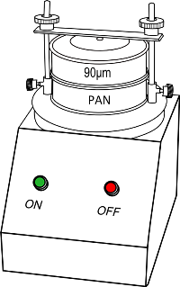
STEP
1


 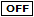
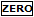
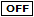
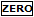

Take cement in a pan and weigh 100g cement to the nearest 0.01g using the weighing scale.
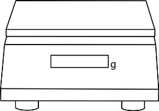
0.000
100.00
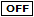
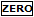
STEP
2


Take 90µm sieve and pour cement sample to it.
STEP 3


 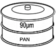
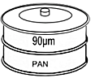


Place the set of sieves in the mechanical shaker and allow to shake for 15 minutes.
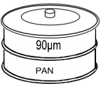
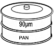
STEP 4


Weigh the residue left on the 90µm sieve.
0.000
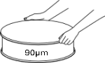
Observations:
Weight of cement sample, W1 = 100g
Weight of cement passing through 90µm sieve =
Weight of residue left on the 90µm sieve, W2 =
✔
✘
Percentage weight retained on the sieve = W2 x 100⁄W1✔
✘
Percentage weight retained on the sieve = W2 x 100⁄W1Observations:
| Trial | Percentage weight retained on the sieve | Average |
| 1 | ||
| 2 |
✔
Inference:
The weight of residue left on sieve should be _____________ of the weight.
less than 10% greater than 10% greater than 25% greater than 50%Trial =


© 2016 - SOLVE - The Virtual Lab @ NITK Surathkal, Department of Water Resources & Ocean Engineering